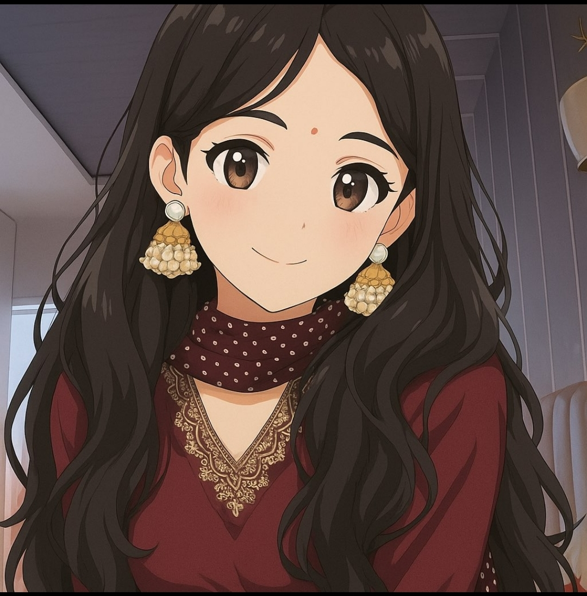

🎂 Happy Birthday
Humbie 💛
I could have written your real name, but “Humbie” feels personal now.
A small collection of memories, stories, songs and little moments.

I could have written your real name, but “Humbie” feels personal now.
A small collection of memories, stories, songs and little moments.
A few things I wanted to tell you today.
An entirely unofficial profile, based on my observations.
Sweet with a little added salt 🧂
A list that could probably keep going.
Some songs become special because of the memories attached to them.
Every song on this page reminds me of you for a different reason.
Some songs become favorites because of their music. Some become favorites because they remind us of a person. Most of the songs on this page belong to the second category. 💛
Maybe you remember it. Maybe your Dory memory doesn't. 🐝
Some things are better left to your permission.
I thought about adding some of your pictures here. But using your personal photos without asking didn't feel right to me.
So instead of filling this place with pictures, I chose to fill this little website with words, songs and memories that remind me of you.
I hope that's okay, Humbie.
Thank you for the conversations, the stories, the songs, the laughter, and all the little moments that became memories.
I hope the year ahead brings you happiness, good health, new adventures, beautiful places, and countless reasons to smile.
Thank you for being the best part of this year, Humbie. 💛
May Radha Rani bless you
with happiness, strength, peace,
and countless opportunities.
🌸🕉️ Radhe Radhe 🕉️🌸